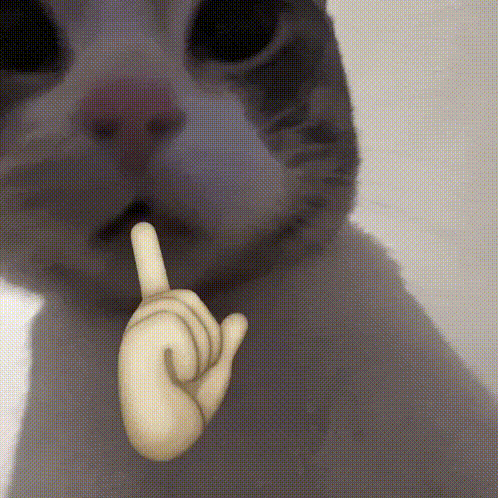

👋 Cześć, jestem vivio
Koduję głównie w JS, Go, HTML, CSS, PHP. Uczę się C, C++, ASM. Znam też Java i Python.
Małe bio
W 2020 podczas pandemii zacząłem interesować się programowaniem oraz komputerami. Od tamtego czasu cały czas powiększam swoją wiedzę o nowe języki programowania oraz technologie.
Moje pierwsze skrypty to były boty do Discorda oraz jakieś proste aplikacje w Pythonie. Tworzyłem nawet własną grę w Pythonie, lecz porzuciłem tamten projekt na rzecz uczenia się JavaScript oraz Golanga.
W 2023 ukończyłem kurs Pythona, na którym nauczyłem się myśleć jak programista i planować swoje programy. Od tamtego czasu nie używam już Pythona (heh). Teraz skupiam się na JS oraz Go.
Głównie skupiam się na backendzie (ponieważ jak sami widzicie, mój frontend nie jest aż taki ładny). A kiedy czuję się na siłach, uczę się low-level coding, czyli pisania kodu w ASM oraz w C. Aktualnie uczę się właśnie C, ASM oraz frameworka do PHP – Laravel.
Gdzieś po drodze uczyłem się Javy, lecz niestety nie pamiętam już kiedy to robiłem. Umiem pisać jakieś proste programy w Javie, pluginy do Minecraft, lecz aż tak nie lubię tego języka ;).
Lubie czasem sobie usuiaść wieczorem odpalić spotyfi i napisać dla kogoś bota niezależnie od tego jak cięzkie to jest zadanie. Zdarza też się że czasem jak mi sie niudzi to ise uczę ASM tak pobocznie.
Posiadam przeciętną wiedzę na temat Linuxa, bardzo dobrze czuję się w jego świecie oraz lubię zarządzać serwerami VPS z Linuxem (Ubuntu).
Umiejętności
Koduję najwięcej w
Uczę się
Znam też
Edytory i narzędzia
Systemy operacyjne
Sprzęt
- ASUS TUF Gaming A15 (1TB SSD, 32GB RAM, Windows 11 - do gier)
- Lenovo ThinkPad E16 (Ryzen 5-7535HS, 32GB RAM, 512GB SSD, Fedora - do kodowania, planowany)
Zainteresowania
- Lotnictwo, symulatory lotnicze
- Matematyka